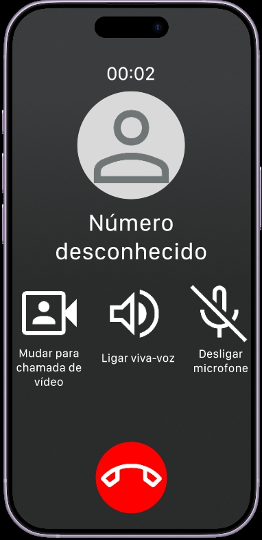
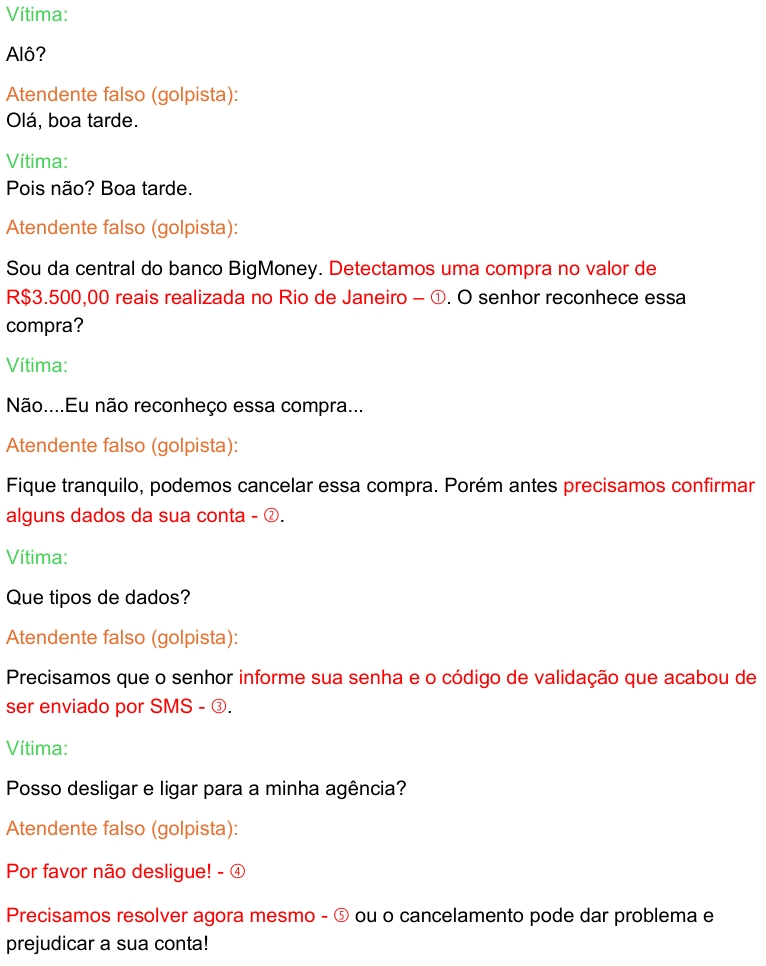

O que é um golpe de Falso Banco?
- Um tipo de golpe em que o criminoso se passa por um funcionário ou representante de um banco.
- O golpista pode ligar para a vítima, informando que houve uma tentativa de fraude na conta e que é necessário confirmar dados pessoais ou bancários.
- O objetivo do golpista é obter informações confidenciais como: senhas, números de cartão e dados bancários, para realizar transações fraudulentas.
- O golpe pode ser aplicado por meio de mensagens, e-mails ou ligações telefônicas.
- O exemplo abaixo ilustra um golpista fingindo ser um funcionário de banco em uma ligação.
Como identificar um golpe de Falso Banco por telefone?
*A conversa abaixo é uma simulação fictícia criada para fins educativos. O banco mencionado também é fictício.*


Siga os números da transcrição da simulação de telefonema acima:
- Compra de valor alto suspeita - O golpista tenta assustar a vítima com uma compra desconhecida e cara.
- Confirmação de dados - Bancos não pedem senhas ou dados sensíveis por telefone.
- Senhas e códigos de verificação - Nunca informe suas senhas ou códigos de verificação por telefone.
- Impedir de desligar - O golpista tenta impedir que a vítima entre em contato com o banco verdadeiro.
- Urgência - o golpista tenta criar um clima de urgência para pressionar a vítima.
Como evitar um golpe de Falso Banco?
- Desconfie de mensagens e e-mails de pessoas que se apresentem como funcionários de bancos.
- Não forneça informações pessoais ou financeiras por telefone, a menos que você esteja certo da identidade da pessoa.
- Verifique a identidade do funcionário chamando diretamente o banco.
- Não clique em links suspeitos enviados por e-mail ou mensagem de texto.
O que fazer em caso de golpe de Falso Banco?
Se você identificou um golpe:
- Desligue o telefone imediatamente.
- Ligue ou entre em contato diretamente com o banco para verificar a situação.
Se você caiu em um golpe:
- Entre em contato com o banco imediatamente para relatar o incidente.
- Altere suas senhas e proteja suas contas.
- Registre um boletim de ocorrência na polícia.
- Bloqueie temporariamente o cartão, se necessário.
Se você concluiu a leitura deste conteúdo, clique no botão abaixo para responder às perguntas e verificar o que aprendeu.
Clique aqui para responder as perguntas